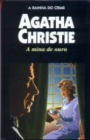

A Mina de Ouro
The Golden Ball and Other Stories
É um gesto de boa vontade ou uma armadilha sinistra que seduzem Rupert St. Vincent e sua família para uma propriedade magnífica? O quão desesperada está Joyce Lambert, uma jovem viúva despossuída cujo único recurso é se casar com um homem que ela despreza? Que circunstâncias inesperadas levam Theodora Darrell, uma esposa infiel para fugir com seu amante? Nesta coleção de pequenas histórias, as respostas são inesperadas a medida que vão aparecendo. A rainha do crime leva encontros românticos bizarros, visitações subrenaturais, e assassinatos clássicos à novos níveis inventivos.